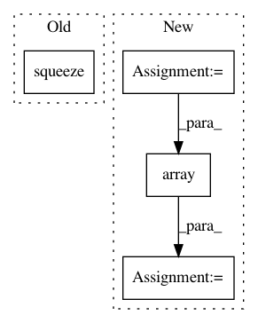

219652c649a687d04d9075d288f0e3ea72ca34e2,pymc3/smc/smc.py,,sample_smc,#Any#Any#Any#Any#Any#Any#Any#Any#Any#Any#Any#Any#Any#Any#Any#Any#Any#,34
Before Change
pm._log.info("Stage: {:3d} Beta: {:.3f} Steps: {:3d}".format(stage, beta, n_steps))
// Apply Metropolis kernel (mutation)
proposed = draws * n_steps
priors = np.array([prior_logp(sample) for sample in posterior]).squeeze()
tempered_logp = priors + likelihoods * beta
parameters = (
proposal,
After Change
priors = [prior_logp(sample) for sample in posterior]
likelihoods = [likelihood_logp(sample) for sample in posterior]
priors = np.array(priors).squeeze()
likelihoods = np.array(likelihoods).squeeze()
while beta < 1:
beta, old_beta, weights, sj = calc_beta(beta, likelihoods, threshold)
model.marginal_likelihood *= sj
// resample based on plausibility weights (selection)
resampling_indexes = np.random.choice(np.arange(draws), size=draws, p=weights)
posterior = posterior[resampling_indexes]
priors = priors[resampling_indexes]
likelihoods = likelihoods[resampling_indexes]
// compute proposal distribution based on weights
covariance = _calc_covariance(posterior, weights)
proposal = MultivariateNormalProposal(covariance)
// compute scaling (optional) and number of Markov chains steps (optional), based on the
// acceptance rate of the previous stage
if (tune_scaling or tune_steps) and stage > 0:
scaling, n_steps = _tune(
acc_rate, proposed, tune_scaling, tune_steps, scaling, max_steps, p_acc_rate
)
pm._log.info("Stage: {:3d} Beta: {:.3f} Steps: {:3d}".format(stage, beta, n_steps))
// Apply Metropolis kernel (mutation)
proposed = draws * n_steps
tempered_logp = priors + likelihoods * beta
parameters = (
proposal,
scaling,
accepted,
any_discrete,
all_discrete,
discrete,
n_steps,
prior_logp,
likelihood_logp,
beta,
)
if parallel and cores > 1:
results = pool.starmap(
metrop_kernel,
[
(
posterior[draw],
tempered_logp[draw],
priors[draw],
likelihoods[draw],
*parameters,
)
for draw in range(draws)
],
)
else:
results = [
metrop_kernel(
posterior[draw],
tempered_logp[draw],
priors[draw],
likelihoods[draw],
*parameters
)
for draw in tqdm(range(draws), disable=not progressbar)
]
posterior, acc_list, priors, likelihoods = zip(*results)
posterior = np.array(posterior)
priors = np.array(priors)
likelihoods = np.array(likelihoods)
acc_rate = sum(acc_list) / proposed
stage += 1
In pattern: SUPERPATTERN
Frequency: 3
Non-data size: 4
Instances
Project Name: pymc-devs/pymc3
Commit Name: 219652c649a687d04d9075d288f0e3ea72ca34e2
Time: 2019-08-22
Author: aloctavodia@gmail.com
File Name: pymc3/smc/smc.py
Class Name:
Method Name: sample_smc
Project Name: pymc-devs/pymc3
Commit Name: 0ea44a495ddef10a7f7045002ee38df244dc4ca0
Time: 2019-07-29
Author: david.brochart@gmail.com
File Name: pymc3/step_methods/smc.py
Class Name:
Method Name: sample_smc
Project Name: IBM/adversarial-robustness-toolbox
Commit Name: d3ac72d887c808a90948db469d8db2f364825992
Time: 2018-04-09
Author: M.N.Tran@ibm.com
File Name: src/classifiers/tensorflow.py
Class Name: TFClassifier
Method Name: class_gradient